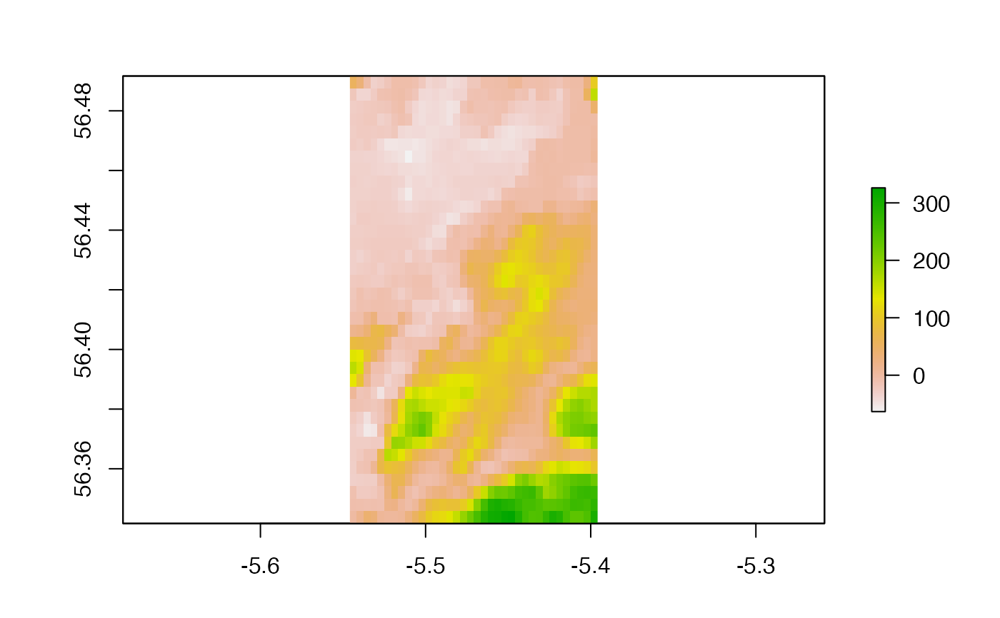
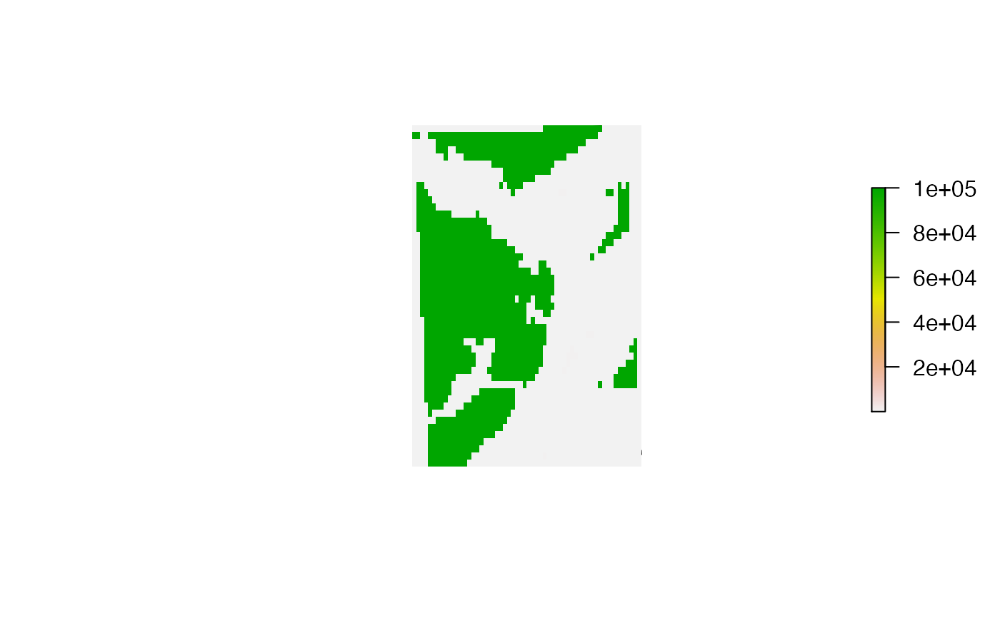

This function implements mask using the inside or the outside of the mask. The function is implemented in the same way as mask but with an additional logical argument, mask_inside. If mask_inside = FALSE (the default), values beyond the mask are masked and the function simply implements mask. In contrast, if mask_inside = TRUE, values within the mask are masked.
mask_io(x, mask, mask_inside = FALSE, ...)A Raster* (see mask).
A mask of class SpatialPolygonsDataFrame-class.
A logical variable that defines whether or not to mask values in x outside (FALSE) or inside (TRUE) of the mask.
Additional arguments passed to mask.
The function returns a Raster* object in which values outside or inside of a supplied SpatialPolygonsDataFrame-class object have been masked.
This function was motivated by animal movement datasets from coastal environments. For example, consider the cost of movement over a surface between two points for an exclusively benthic marine animal versus an exclusively terrestrial animal. With a mask that represents the coastline, for the exclusively marine animal, it is necessary to mask values inside the coastline (i.e., on land), so mask_inside = TRUE, to prevent movement on land; while for a terrestrial animal, it is necessary to mask values beyond the coastline (i.e., in the sea), so mask_inside = FALSE, to prevent movement into the sea.
#### Define an example raster
# We will use some bathymetry data from around Oban
# ... which we will mask using some coastline data. All values on land
# ... are currently NA so we'll set these to 10 m for demonstration purposes.
dat_gebco[is.na(dat_gebco[])] <- 10
dat_gebco <- raster::crop(dat_gebco, raster::extent(dat_coast))
#> Error in .local(x, y, ...): extents do not overlap
raster::plot(dat_gebco)

#### Standard implementation with mask_inside = FALSE simply implements raster::mask()
m <- mask_io(dat_gebco, dat_coast)
raster::plot(dat_coast)
raster::plot(m, add = TRUE)
#### Implementation with mask_inside = TRUE implements the mask within the coastline
m <- mask_io(dat_gebco, dat_coast, mask_inside = TRUE)
#> Warning: GEOS support is provided by the sf and terra packages among others
#> Warning: spgeom1 and spgeom2 have different proj4 strings
raster::plot(dat_coast)
raster::plot(m, add = TRUE)
#### Additional arguments to raster::mask() can be passed via ... as usual
m <- mask_io(dat_gebco, dat_coast, mask_inside = TRUE, updatevalue = 1e5)
#> Warning: GEOS support is provided by the sf and terra packages among others
#> Warning: spgeom1 and spgeom2 have different proj4 strings
raster::plot(dat_coast)
raster::plot(m, add = TRUE)
